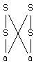

A big problem with context-free languages is the handling of ambiguity. LINGOL handles ambiguity in the same manner as any bottom-up parser would--namely, by keeping track of all possible ways of considering the symbols i through j in the sentence as a particular non-terminal, say "A", and keeping the parse "tree" factored. Thus, the grammar
S->Sa
S->aS
S->a
would generate the "tree":

LINGOL is able to choose between competing parses for a substring (subsentence), by another LISP expression attached to each context-free rule called the cognitive component. This component is either a number or a program. Suppose that all of the cognitive components are numbers. Then to find the best subtree for a subsentence, we simply add the cognitive components associated with each node (and hence the rule which generated that node) and compare the results for each subtree. The subtree with the largest number (algebraically) wins. In the case that the component is a program, the program simply executes a function which has as a side-effect the incrementation of the sum. The existence of this component gives the system the flexibility to make non-linear ambiguity judgements.
There is a problem with LINGOL as it currently stands. One can play with the cognitive component a lot in order to get the proper interpretation but sooner or later one decides that there are certain parses that will never be acceptable. Yet no matter what negative number is assigned by the cognitive component of a rule, it may not be enough to keep that rule from participating in a final parse tree. For example, one might want to enforce number agreement between subject and predicate. In the current system, one either needs two sets of distinct rules for third person singular and not 3rd person singular, or give non-agreeing sentences very small cognitive sums.
One way around this problem is to introduce a new component called the feature component, which is a program which may veto the application of the rule (in this case). This feature component has access to the feature component of the subtree below it, as well as to any other knowledge it may have (i.e., a global data base). The values passed back and forth by this feature component are not to be constrained in any way, but were originally conceived of as bit vectors. These bit vectors encode various features of the subsentence, such as person, number, case (nominative versus objective), presence of WH, missing objects (verb or preposition), infinitive, gerund, etc. If everything works out right, the number agreement can be performed by a simple bit-string "AND" followed by a bit test!
(left right feature cognitive generative)the format of the dictionary entry is:
(word non-terminal feature cognitive generative)The programming of the feature component is in the same style as that of the cognitive and generative components; the descendants are accessed, however, by "(LF)", "(RF)", and "(DF)". Whereas the generative component is run only once on the single parse tree decided upon by LINGOL, and the cognitive components are run only when two competing parses for the same subsentence are found, the feature component is run every time the right-hand side of a rule is recognized and LINGOL wants to form a phrase. If the feature component returns the value NIL, the phrase is not formed; any other value allows phrase formation and this value will be accessible by higher level feature components. The ordering of the components within the grammar and dictionary entries is meant to be mnemonic for the fact that the feature component is run the most often, the cognitive next most often, and generative the least often. Furthermore, one can be assured that by the time any component is run, all the components to the left of it in the same rule have already been run. As a result of this, any component can access the descendants of the components to its left; i.e., the generative component can call upon (LF), (DC), etc. as well as (LG), (DG). It would not be much trouble to allow a component access to the value of the components to its left as well as their descendants, but this is not yet implemented. There is a certain asymmetry involved in component execution, though. The feature and cognitive components are run in a bottom-up fashion; i.e., the (LF), (DF), (LC), (DC), etc. components have already been calculated and stored by the time the component that needs them is executed. However, the generative components are executed in a top-down fashion; i.e., the top level generative component is run, and if it calls upon any lower level components, they are then executed, and so on. As a result of this asymmetry, the higher level generative components may define variables which the lower level generative components may access, while this mechanism is denied the cognitive and feature components.
The feature component can be thought of as a way of augmenting the non-terminal set of the context-free grammar. If N is the set of non-terminals and F is the (possibly infinite) set of feature values, then the resulting grammar can be converted into a context-free grammar having terminal set of NxF. Every rule of the feature grammar would have to be expanded into many rules, one for each combination of (left-hand-non-terminal, feature-value) and (right-hand-side, descendant-feature-values). Of course, this expansion would not terminate unless the set of possible feature values is finite (we already have a finite non-terminal set). It is this ability to drastically reduce the size of a context-free grammar that led to the adoption of the feature component.
The set of feature values in the one NLINGOL grammar in existence (PSHRDLU) is the set of 35-bit bit strings (a finite, but very large set). This set of bits is used to indicate various attributes of the phrase such as person, number, case, presence of "wh", gerund, participle, etc. These bits and their interpretation are so designed such that the most usual operation which must be performed by the feature component is bit-testing followed by "or-ing" or "and-ing" additional bit strings. For example, the feature component of the various parts of a noun group would encode the singular-plural distinction. We could use two bits for this encoding, one for singular and one for plural. Any singular noun would appear in the dictionary with the singular bit on and the plural bit off. The determiner "a" would appear in the dictionary with the singular bit on and the plural bit off, while the determiner "the" would appear in the dictionary with both bits on. The intended interpretation of this scheme is that a singular bit on indicates the possibility that the phrase is singular, while both bits on indicate that the phrase could be either singular or plural (viz. "sheep").
Now when the phrase "a sheep" is encountered, the rule
(NOUN-GROUP (DETERMINER NOUN)
(COND ((NOT (ZEROP (LAND (LF) (RF)))) (LAND (LF) (RF))))
....
...)
is called, at which time the features are logically anded (LAND)
together to check for the consistency of those of the determiner and those of
the noun. If the result is non-zero, then some possibility still remains
(either singular or plural), whereas if the anding produces zero, then the
determiner is not in agreement with its noun ("a shoes"). In this case, the
COND will return NIL, and the phrase will not be formed. The
same thing can be done with other kinds of agreement, although a block of bits
has to be set aside for each kind. The elegance of this system (the idea comes
from REL), is that bit vector operations are very cheap and therefore many
features can be checked in parallel. The PSHRDLU grammar is a test of these
ideas (as well as others) and it is able to correctly parse sentences with many
unknown words due to its more complete grammar (when compared with its
predecessor SHRDLV). Yet it is only a few lines longer than SHRDLV.
There are several things wrong with this approach. First, many so-called "vocalic" suffixes cause spelling changes in the roots of the words they are added to, making it necessary to store all possible spellings for a root depending upon the different suffixes it can take. Secondly, there is little control over the stripping process; in particular, the immediate needs of the parser are not considered.
In order to correct these deficiencies, a new morphology package for LINGOL was written. This package consists of several LISP functions which call user functions. When LINGOL encounters a word not in its dictionary, it calls the function "CLEAVE" in order to do something. The cleave function can return NIL, which says that it does not know what to do either, or it can return a list of possibilities for what to try instead. It can act as a spelling corrector, in which case the list will be a list of guesses as to what the word should have been. It can also act as a morpheme analyzer, in which case the list will be a list of sequences, each of which is a list of morphs which are supposed to describe that word. The reason for the list of possible sequences, instead of just one sequence, is that there are situations in English where it is impossible to tell out of context what the root and suffixes of a particular word are. For example, "leaves" can be analyzed as either (LEAVE S) or (LEAF S). In this case, CLEAVE could return ((LEAVE S)(LEAF S)) to indicate these two possibilities. However, in either case, there is no ambiguity about the final "S". LINGOL can save much time and effort if it knows this, and so the morphology package knows how to handle a list that is suitably factored, namely (((LEAVE LEAF) S)). What this notation means is there is a list of possibilities which has one element, namely a sequence whose first element is a list of possibilities and whose second element is the atom "S". This notation is not confusing because possibility lists and sequence lists alternate; one can never have a sequence of sequences or a possibility list of possibility lists. This is because a sequence of sequences is simply the longer sequence and the possibilities of possibilities is just a longer list of possibilities. CLEAVE is the only interface between LINGOL and the morphology package.
In the standard NLINGOL, CLEAVE calls on DESUF and DEPREF in order to perform suffix and prefix stripping, respectively. DESUF takes one argument, the word, and produces a list of possibilities in the above format. It does this by looking for all possible final substrings of the word which have the "SUFFIX" property. If such a property is found and it is not "T", the property is called as a function of two arguments--the word itself and the suspected suffix. This user SUFFIX function returns a list of possibilities in the above format. DESUF concatenates all the possibility lists together into one bit possibility list and returns it to CLEAVE. The reason for passing the SUFFIX function two arguments rather than one (the second would seem to be redundant), is that many different suffixes may share the same suffix function--e.g., "ER", "EN", "EST". In the case that the suffix property is the atom "T", DESUF calls CHOP, a default suffix function which simply chops the suffix from the word and returns the rest. DEPREF is just like DESUF, except that it looks for initial substrings having the "PREFIX" property and the default is "PCHOP".
The user function can completely analyze words into morphs in one step if it wishes; however, this method would not solve the problem of doing work that the parser may not approve of. Since LINGOL will again call CLEAVE on any morph it does not recognize in the result returned by CLEAVE, all the user function must do is make some progress in the analysis of the word into morphs. In particular, it cannot simply return as one of the possibilities the word itself--this would lead to infinite descent. The most efficient thing to do, since LINGOL is a left-to-right parser, is to strip off the longest initial substring of the word and return the pair of (initial-substring, rest-of-word) as a possibility. This is because LINGOL is a goal-directed parser; it will not try any parse that could not have been part of a recognizable sentence. In this way, it can quickly eliminate the possibilities that cannot be parsed. For example, in (((LEAVE LEAF) S)), "leave" is a verb (usually) and "leaf" is a noun. If the next word can be only a verb, "leave" will be chosen as the correct possibility and the system will not consider "leaf" further.
(VERB (VERB S) ... )In fact, a rather clever use of the morphology allows one to rearrange the morphs to undo "affix-hopping", a transformation of transformational grammar! This is done by giving the "hopping" suffixes a user function which reverses the order of the sequence of morphs. For example, the "S" suffix function would return the "runs" ((S RUN)). In this way, the inflectional suffix could be parsed as part of the subject noun phrase, perhaps to check subject verb agreement, using a rule like
(SUBJECT (NOUN-PHRASE S) ... )In fact, this has been done, and the PSHRDLU grammar is such an inflection-hopping grammar. (The "p" stands for "pig", as in "pig-latin".)
(word non-terminal cog gen)If a triple of the form (word IRREGULAR exp) is encountered, the word is entered with an IRREGULAR property. This means that if "word" is encountered during reading, the "exp" will be evaluated and the result should be a sequence of words. In this way, the parser will continue as if the sequence of words had been read instead. Thus, the IRREGULAR property acts as a kind of read "macro". For example, the word "ran" could be listed in the dictionary as either (RAN IRREGULAR '(RUN ED)) or (RAN IRREGULAR '(RUNNED)). Presumably, the first would be chosen for efficiency, while the second would be chosen for independence of the dictionary from the grammar. Thus, irregular words are "regularized" so that the grammar can be kept simple. This has the drawback of accepting the regularized versions of the words as correct ("The boy runned to the store."), but this treatment is in accord with the LINGOL philosophy of trying to understand what is being said, rather than making grammatical judgements. Finally, the result of evaluating the third component of an IRREGULAR dictionary entry is actually a factored list similar to that returned by suffix or prefix functions, except that the top level is a sequence instead of a possibility list. This is not a restriction, since the same word can have many IRREGULAR entries in the dictionary. The full treatment of the verb "to run" is instructive:
(RUN IRREGULAR '(RUN-)) (RAN IRREGULAR '(RUN- ED)) (RUN IRREGULAR '(RUN- EN)) (RUN- VERB ... )Most verbs without a distinct past participle form "bought" can be treated like so:
(BOUGHT IRREGULAR '(BUY (ED EN)))
The requirement of the ordering of terminal symbol processing led to the rewriting of the main parse routine, which is now called "NOTE", standing for "note the consequences of the phrase just found". Instead of queuing the consequences, NLINGOL now calls itself recursively to immediately process them. Besides being more efficient in LISP, this method is also easier to program and understand.
The feature component processing also engendered small changes in the parsing algorithm. Since the effect of the feature component is to multiply the number of non-terminals, the non-terminals seen by the parser are actually pairs (non-terminal, feature-value). In particular, an ambiguity is not seen unless two different phrases describing paths from boundary i to boundary j have both the same non-terminal and the same feature value. (Note that they do not have to describe the same path, but just the same end-points.)
LINGOL is able to handle epsilon-rules extremely easily because it treats every terminal symbol "X" read in as if it were an "IRREGULAR" with a rule of the form (X IRREGULAR '(epsilon X)), except, of course, "epsilon" itself. This works because besides any ordinary dictionary entries X might have, the parser also considers the possibility of a missing symbol before X. Using LINGOL's normal goal mechanism, only those epsilon rules will be considered which can possibly participate in a parse. If X cannot follow any of these epsilon rules in a legal string, then the hypothesis of a missing terminal symbol will be abandoned.
Of course, the bottom-up nature of the LINGOL parser will cause looping if care is not used in the specification of these rules. This is because LINGOL finds every parse, not just the minimal parses. For example, a grammar which can analyze an empty string into an arbitrarily large tree structure will cause looping.
S->e
S->S S
Above is such a grammar.
It is well known that erasing rules can be eliminated from a context-free grammar without changing the set of terminal strings it generates. There are two problems with using this approach in LINGOL. First, the number of rules seems to grow exponentially; and second, the equivalence is not strong, therefore, not structure-preserving. Even if one were willing to live with the first problem, the second one is serious, because the structure of the analyzed surface string determines the feature, cognitive, and generative components which are actually run.
Consider how the erasing rules are actually eliminated. To eliminate a rule of the form N->e from a grammar, we replace every occurrence of N on the right-hand-side of any rule by the meta-notation "(N+e)" and then "multiply out" all occurrences of the parenthesis notation. We then eliminate any duplicate rules as well as the original rule "N->e". The problem of the infinite number of analysis trees describing a finite terminal string would seem to have disappeared. However, all we have done is to collapse those trees into equivalence classes in which the ambiguity now appears in the feature, cognitive, and generative components. In the process of elimination, what should happen to these components?
This problem plagues not just erasing rules, but any "optimization" of the given context-free rules. In order to solve this problem, LINGOL must be able to "glue" some of the components together during the optimization process instead of at run time. But to do this would require some restrictions upon the components or else any side-effects which they perform would not be done at the right time. An ideal formalism for the language to be used in the components is the pure lambda-calculus, because in this formalism, referential transparency is guaranteed; therefore, the order of substitution ("glueing") is immaterial.
It is possible to convert a context-free grammar to handle a class called "noise" by inserting "noise" before, after, and between all symbols on the right-hand-sides of every rule in the grammar (here "noise" refers to the Kleene closure of the set of noise words). This process increases the size of the grammar only linearly, and could be done by an appropriate read-in routine. Of course, it also introduces epsilon-rules into the grammar, which can themselves cause an exponential blowup if eliminated. (It is interesting that although the set of strings N^*-e=N^+ causes no blowup, the set N^* does.)
(A (B C D) ... )is such a rule having three non-terminals on the right hand side. There is a problem, however, in that it is not clear how the feature, cognitive, and generative components should access their inferiors. Since there can be an arbitrary number of non-terminals in such a right-hand-side, no finite set of 0-argument functions will suffice. Therefore, three new accessing functions are defined: F, C, and G. To access the feature component corresponding to the i'th non-terminal of the right-hand-side, use "(F i)", for cognitive, use "(C i)", for generative, use "(G i)". To continue our example of above, the following rule will simply print the values of the feature, cognitive, and generative components when they are executed:
(A (B C D) (PRINT (LIST (F 1) (F 2) (F 3))) (PRINT (LIST (C 1) (C 2) (C 3))) (PRINT (LIST (G 1) (G 2) (G 3))))Since F is defined in terms of DF, LF, RF; C is defined in terms of DC, LC, RC; G in terms of DG, LG, RG, these functions will perform analogously to their more primitive versions.
NGRAMMAR works by converting rules whose right-hand-sides are longer
than two into sequences of rules with two right-hand-sides. If one thinks of
the tree structure of a terminal string instead of the rule, there are two
obvious ways to perform this conversion: replace the many-way branch by a
left-branching or a right-branching binary tree. There is no obvious way to
choose between the two in "pure" LINGOL, since the left-branching tree produces
lots of phrases and the right-branching one produces lots of goals. However,
once one has to deal with feature components, goals are cheaper than phrases
because building goals does not execute this component. Even without features,
if LINGOL were to use a "look-ahead" parser, the right-branching method would
still be preferable. Therefore, the rule given above would be converted into
the two rules:
(A (B -C-D) <same-feat> <same-cog> <same-gen>)
(-C-D (C D) -1. () ())
No components need be defined for any but the first generated rule since
F, C, and G access the lower branches directly.
NGRAMMAR handles right-hand-sides with intermixed terminals and non-terminals. The terminal symbols are distinguished by a preceding single quote "'" while the non-terminals are unquoted. These quoted terminals are treated like "literals" in that dictionary entries for them are automatically created. Even rules whose right-hand-side consists of a single quoted terminal are handled properly; however, no grammar entry is made at all, just a dictionary entry.
This "literal" feature of NGRAMMAR is implemented by constructing a
dictionary rule of the form
(
<terminal> /'<terminal> () ())
for each quoted terminal
symbol appearing in a right-hand side and replacing the quoted terminal by the
corresponding non-terminal in the generated grammar rules. Of course, the
special case of the single quoted terminal will generate only the corresponding
dictionary entry. The following examples illustrate these principles:
(NP (NP 'AND NP)
<feat> <cog> <gen>)
generates the grammar rule
(NP (NP /'AND NP)
<feat> <cog> <gen>)
and the dictionary rule
(AND /'AND () ()).
(NP 'I <feat> <cog> <gen>) generates only the dictionary entry (I NP <feat> <cog> <gen>).
SHOWAMB -- Tell how many points of ambiguity, the total number of branches from those points, and the total number of ways of interpreting the sentence.
SHOWGOAL -- Show the list of goals associated with the current boundary; similar to SHOWFOUND.
[Pratt73] Pratt, V.R. "A Linguistics Oriented Programming Language". MIT AI Memo 277, Feb. 1973.
Pratt, V.R. "A Linguistics Oriented Programming Language". IJCAI-3, Stanford, CA, Aug. 1973.
[Pratt75] Pratt, V.R. "LINGOL -- A Progress Report". MIT AI Working Paper 89, Jan. 1975.